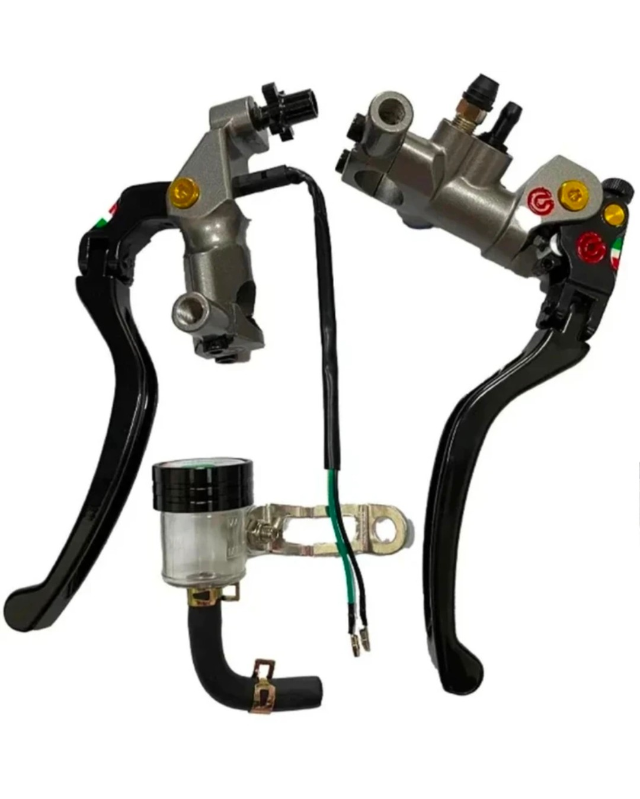
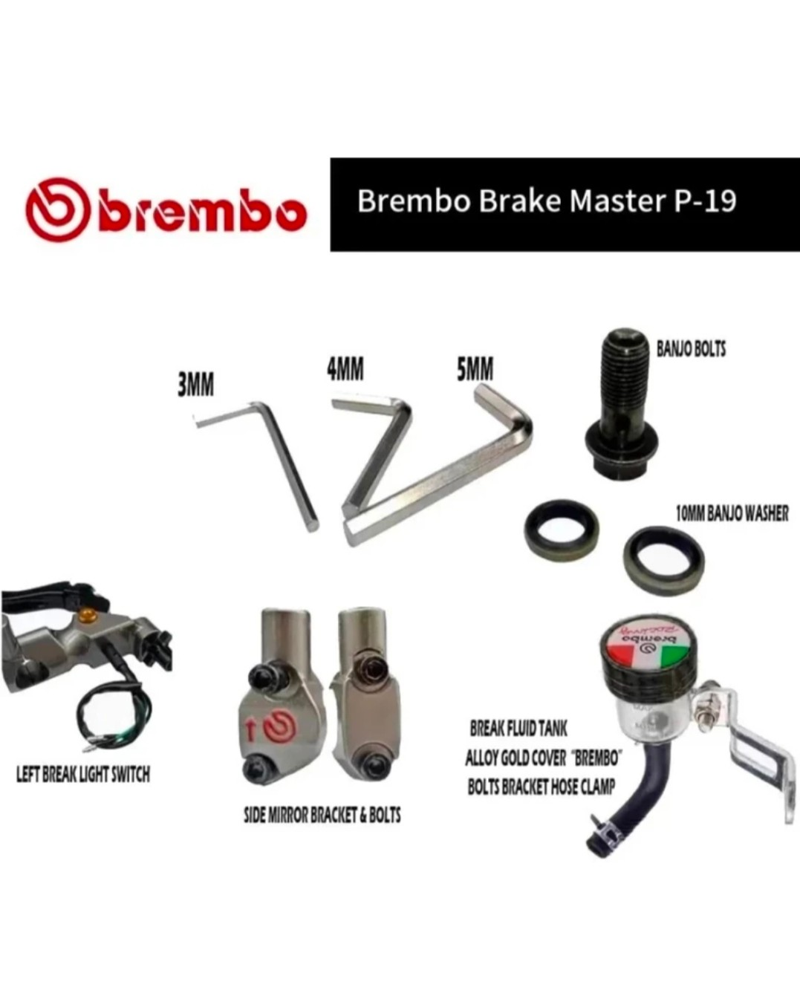

Shinify Brake Lever-
For Honda, BMW, Bajaj, TVS, Kawasaki Dominar 400, Ninja 650, Ninja 300 (Black and grey)


✅The Shinify Brembo Hydraulic Brake Lever Clutch Brake Clutch Lever is designed to be compatible with a range of motorcycle brands,
including Kawasaki, KTM, Suzuki, Yamaha, Hero, and Honda.
✅It features a hydraulic system that offers improved braking performance and a smoother clutch operation.
✅This brake lever set is made of high-quality materials, ensuring durability and reliability under various riding conditions.
✅It's ideal for riders looking to upgrade their braking system for better control and safety
